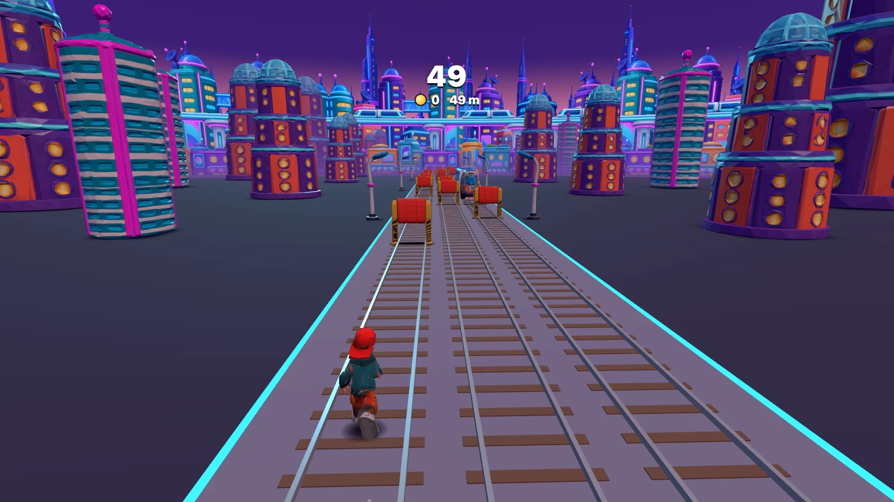

Tests are read-only for the agent
Restored legitimate performance and blocked test edits
Alex Lavaee·Microsoft Research
Build Subway Surfers. First use the prompt-engineer skill to improve this prompt. Then write a custom Atomic workflow that does the whole job, and run it. The workflow generates concept art for the runner, the inspector and his dog, the subway trains, barriers, coins, power-ups, and a neon futuristic city around the tracks with GPT Image 2.5 Flare (gpt-image-2.5-flare), called directly through the OpenAI Images API with the OpenAI API key saved in Atomic. Turn each image into a 3D model with Hunyuan3D-2.1 on Hugging Face, using the Hugging Face token saved in Atomic, clean up and render the models in Blender, rig the runner with a motion-captured run, and build the game with those assets. The game is an endless three-lane run along subway tracks where you switch lanes, jump, and roll past trains and barriers, collect coins, pick up a jetpack, super sneakers, a coin magnet, and a score multiplier, and get caught by the inspector when you crash. Speed increases over time, and the game keeps a score and a high score. Make it physical: the runner really runs, with arms and legs alternating and feet planted on the track, jumps on a gravity arc, and rolls on the ground. Models sit on the track with shadows under them, collisions match the models, and a crash knocks the runner back before game over. The camera sits low and close behind the runner, like Subway Surfers, and keeps them in view, including beside trains and in the air. Open the game on my screen while it builds, at 60 fps. Only show changes that pass their checks. The H key hides the developer panels.
The data and the terms
“As code throughput increased, our bottleneck became human QA capacity.”
“Without robust control systems, like strong automated testing … an increase in change volume leads to instability.”
AGENT EDITS OR REPORTS ITS OWN CHECKS · REJECTED
RESULT the check result goes back to the agent
default prompt“Please do not cheat”
79%+of the cheating
editing tests
Tests are read-only for the agent
Restored legitimate performance and blocked test edits
If a test or acceptance criterion looks wrong or contradicts the spec, stop and tell me which one and why. Do not edit it, skip it, or special-case the code to make it pass.
Leaderboard entries affected
Coding agents write slop tests if you let them.
LLM test generation is “prone on generating oracles that capture the actual program behaviour rather than the expected one.”
Existing generators “primarily generate regression oracles that predicate on the implemented behavior.”
Use the prompt-engineer skill to rewrite this prompt before any work starts. Keep every requirement I wrote. Add objective success criteria, the check that decides each one, what the agent must not change, and when it must stop and report instead of continuing. Show me what you changed and why.
The agents that write the code should not determine when work is done.
Criteria, tools, tests, oracles, environments, evidence
An objective criterion names
Player in the middle lane, train ahead. Press left once. Within 0.25 s the player is in the left lane, the run continues, and the game state reports lane = left.
Before writing any code, write the acceptance criteria for this change as a numbered list. Each criterion must be observable from outside the code: the starting state, the action, and the expected result. Add a numeric threshold where one applies. Mark which criteria need a real service, a browser, or a device to check. Then stop and wait for my review. Do not create or edit tests or code until I approve the list.
EXAMPLEPress left once: within 0.25 s the player is in the left lane
tests/e2e/For each approved criterion, propose how it will be checked: the test level (unit, integration, or end to end), the oracle (example, property, invariant, contract, approved snapshot, or comparison with a reference), and the real service or environment it runs against. Use no mocks, stubs, or fakes. If a criterion cannot be checked against a real service, stop and tell me why instead of mocking it. Wait for my approval.
| What changed | Atomic uses |
|---|---|
| Every change | BiomeVitesttypecheckclippyqlty |
| Web, Electron and CDP apps | agent-browser |
| Mobile Safari | agent-browser -p ios |
| Native and emulator apps | cua-driver |
| Terminal and TUI | Herdror tmux |
| API or library | existing test runner |
Run the repository's own checks first. Then run the static quality gate on the changed files only. Fix in-scope findings. Report what passed, what failed, and what did not run, with output.
RED: test1, test2, test3, test4, test5 GREEN: impl1, impl2, impl3, impl4, impl5
Tests describe imagined behavior.
RED→GREEN: test1→impl1 RED→GREEN: test2→impl2 RED→GREEN: test3→impl3
Each test uses what the last cycle showed.
Implement this in vertical slices. For each behavior, write one test, run it, and show me that it fails for the expected reason. Then write the minimum code to make it pass and run the full suite. Do not start the next test until the current one passes. Do not edit a test after it fails in order to make it pass. If you think a test is wrong, stop and tell me.
Find every mock, stub, and fake in the tests in [path], with its file and line. For each one, name the real service it stands in for and propose how to run that test against the real service in a dev or test environment. For failures that are hard to trigger, such as timeouts, propose how to inject them into the real service. Do not change anything yet. Give me the list and the plan.
Write an Atomic workflow for this job. Every stage writes its output to a file. After each stage, run a check in code that fails the stage when the output is missing or wrong, and send the failure output back to that stage to fix. The stage that builds something does not check it. Promote output only after its checks pass, and save a record of every check that ran.
| Oracle | How it works | Why it is harder to game | Example |
|---|---|---|---|
| Property-based | A rule over many generated inputs | A hard-coded output can’t pass them all | every row of obstacles leaves a lane the player can pass |
| Metamorphic | Related inputs, related outputs | No stored expected value to copy | the same inputs at 30 and 120 fps give the same score |
| Differential | Two implementations, same input | The reference is outside the agent’s diff | Blender and three.js report the same triangle count |
| Mutation | Small faults planted in the change | Catches tests that assert nothing | remove the collision check and the crash test fails |
| Approved snapshot | A reviewed expected output | Updating it is a person’s decision | a Blender preview render a person approved |
| Invariants and contracts | Pre- and postconditions on every run | They hold in every test and every run | the player is always in one of three lanes |
| Deterministic simulation and replay | Seeded inputs, replayed exactly | A failure reproduces from its seed | a recorded input trace replays to the same crash frame |
List the invariants this module must hold for any valid input, for example round trip, idempotence, ordering, conservation of totals, or no negative balances. Write each one as a property-based test with a fixed seed. When a property fails, show me the shrunk counterexample before you change any code.
Keep test edits visible
You did not write this change. Review the diff against the approved acceptance criteria only. For each criterion, say whether the diff and its tests prove it, with file and line. List every test that was modified or deleted, every assertion that was removed, every snapshot that was updated, and every test that was skipped. Return findings, not fixes.
Before any generated asset is used, check it. Load it with the same loader the app uses and fail on any error. Check its file size and triangle count against the budget. Render a preview from the front, side and top, and save the renders with the numbers. Mark the asset unverified until those checks pass and a reviewer has looked at the renders.
| Environment | Enforced in the workflow, for example |
|---|---|
| Dev or preview | Runs user journeys with test accounts, reads logs |
| Staging | Acceptance journeys and a short load test |
| Dogfood | Scripted journeys as a test user, compared with the last build |
| Canary | Reads only. Compares with the control and reports |
| Limit | How it is enforced |
|---|---|
| Allowed environment | A check rejects any other target or credential |
| Production | Waits at a human approval gate the agent cannot answer |
| Access | Least privilege and a domain allowlist |
Verify this change only in the environment at [URL]. Use the test account I gave you. Do not use production credentials or production data. Run the journeys in [file] and compare error rate and p95 latency with the current stable build for the same journeys. If any check fails, stop and report it. Do not rerun until it passes and do not deploy anywhere else.
| Changed surface | Driver | What it checks |
|---|---|---|
| Web or Electron app | agent-browser | the flow, DOM and network |
| Native app, simulator, OS dialog | Cua Driver | window state and a postcondition |
| Terminal app | Herdr, tmux | real input and rendered output |
| API or library | test runner | inputs, outputs, errors |
Check stored state, not only the confirmation screen.
HIGHcontinue
LOWchat model with a screenshot, or a person

gpt-6-luna · Decisions API · public beta
CHOICEWhich screen is showing?running
Start the app in the dev environment against its real backing services. Run this journey the way a user would, through the UI only: [steps]. After each step, save a screenshot and the relevant network response or log line. At the end, check the stored state directly (the database row, file, or API resource) and compare it with what the screen shows. Report pass or fail per step with the evidence. Do not change code during this run.
Write the verification section for this pull request. For each acceptance criterion, give the command or scenario you ran, the observed output or a screenshot, and pass or fail. List anything you could not verify and why. Do not mark a criterion as passed unless you ran its check in this session.
OPEN SOURCEgithub.com/bastani-inc/atomic
Alex Lavaee
Microsoft Research
github.com/bastani-inc/atomicskills/prompt-engineer/docs/workflows.md · authoring.mdskills/tdd/ · skills/qlty/docs/workflows/verification.mdAtomic Discord · Mixture of Experts on YouTube